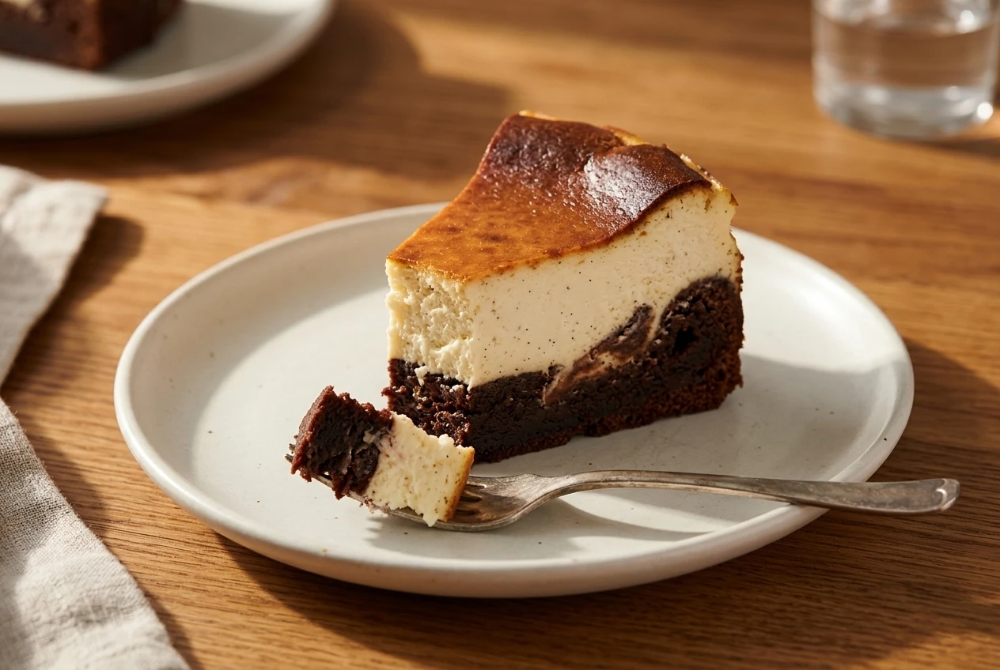
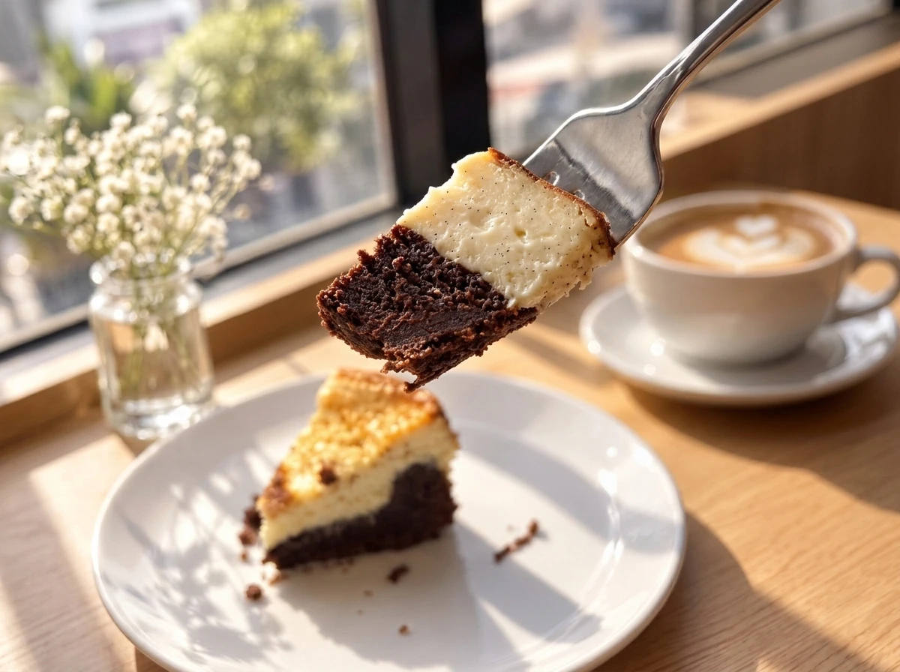
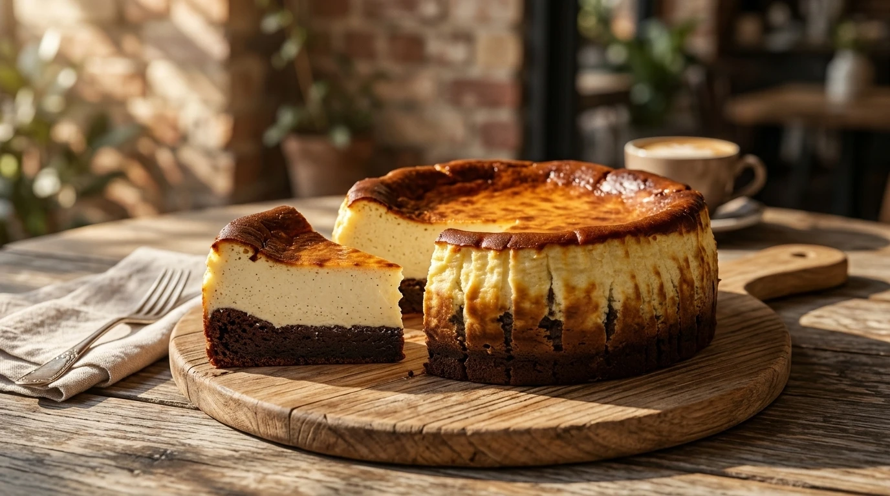

VERYGOOD JOURNAL · TEXTURE & CONSTRUCTION GUIDE
A close, fudgy chocolate crumb against a creamy, sometimes tangy cheesecake—and how to read the arrangement before you choose.
The appeal of brownie cheesecake is the contrast: a close, fudgy chocolate crumb against a creamy, sometimes tangy cheesecake.[11][14] The two parts can share a forkful without feeling identical.
The name still leaves room for variation. A cakier brownie or a marbled swirl gives you a different arrangement to consider.[11][13] Start with the textures you enjoy, then look at how the two parts fit together.
TEXTURE CONTRAST · TWO PARTS IN ONE FORKFUL
“Brownie” can mean fudgy, chewy, or cakey,[11] while “cheesecake” brings a dense, egg-set cheese-and-cream filling.[12] Pair the slice photo with the maker’s description to know which texture leads.[11][13][14]

An illustrative brownie–cheesecake combination showing a dark chocolate base beneath a creamy cheesecake layer; always check the maker’s description for a specific dessert’s arrangement and texture.[11][14]
“Brownie” covers more than one texture.[11] King Arthur Baking distinguishes fudgy, chewy and cakey versions, with changes in ingredient proportions affecting the result.[11] A fudgy brownie has a more compact crumb; a cakey one can have a lighter texture while still being moist.[11]
For a brownie cheesecake, that gives you a useful first question: do you want a dense chocolate bite or something closer to cake?

Fudgy or cakey? Visual textures are prompts for a question, not proof of the bite.[11]
If the thought of a compact, fudgy mouthful appeals, look for that wording in the description. If you would rather have a more cake-like crumb, ask whether the brownie leans cakey.
BROWNIE TEXTURE GUIDE · ILLUSTRATIVE COMPARISON
STYLE 01 · COMPACT CRUMB
Fudgy Brownie
A close, compact chocolate crumb that delivers a dense, rich chocolate mouthful beneath or beside the cheesecake.[11]
STYLE 02 · COHESIVE BITE
Chewy Brownie
Distinguished alongside fudgy and cakey versions as ingredient proportions shift toward a firmer, structured chew.[11]
STYLE 03 · LIGHTER TEXTURE
Cakey Brownie
A lighter, more cake-like crumb that can still remain moist if you prefer a softer chocolate sponge feel.[11]
Fudgy or cakey? These illustrative texture descriptions are prompts for a question, not proof of the bite or a recipe disclosure.[11]
Cheesecake offers a different kind of richness. King Arthur’s cake guide describes a rich, dense cheese-and-cream filling, typically with little or no flour; eggs provide its structure.[12] It is not simply a pale version of chocolate cake.[12]
For creamy texture with a tangy note, Basque cheesecake is one example: King Arthur describes both qualities in its version.[14] Think about whether that contrast appeals to you. Would you like the chocolate to lead, or are you looking for a cheesecake-focused dessert with brownie as its companion?
You can ask for that balance without asking the baker to disclose a recipe.
EGG-SET STRUCTURE · WHY CHEESECAKE FEELS DENSE YET CREAMY
Unlike flour-based sponge cakes, cheesecake relies on eggs to set a rich cheese-and-cream filling with little or no flour.[12] When paired with a brownie, both components bring substance—the contrast comes from creamy tang against cocoa crumb.[11][12][14]
There is more to the choice than “brownie plus cheesecake”. King Arthur’s Chocolate Cheesecake Brownies, for example, combine brownie and cream-cheese batters in layers with a swirl.[13] That is one published version, not a definition every hybrid must follow.
When reading another maker’s description, check whether it explains the arrangement. Are the two parts clearly separated, or combined in a swirl? Which is intended to take the lead? Treat those as questions to ask, rather than details to fill in from the name alone.
A dark surface need not mean a burned centre.[14] King Arthur describes Basque cheesecake with a blistered, blackened exterior and a smooth, creamy interior.[14] The visual contrast is part of that style, not evidence that the whole cake has the same texture as its top.[14]
If a brownie cheesecake is described as Basque-style, ask what that means for that particular dessert. The style name alone is not a full explanation of its brownie component or construction.

A dark Basque-style surface does not describe the whole interior: a blistered exterior can surround a smooth, creamy centre.[14]
GENERAL STYLE GUIDE · SURFACE VS. INTERIOR
01 · Blistered, Deeply Browned Top
In Basque-style cheesecake, a dark, caramelized surface is an intentional feature of the bake—not a sign of a dry or overcooked centre.[14]
02 · Smooth, Creamy Centre Beneath
Inside the darkened exterior sits a pale, creamy cheese-and-cream filling with a gentle tang.[12][14]
03 · Layered vs. Swirled Brownie Pairing
Because makers can either separate the brownie and cheesecake into distinct layers or swirl them together,[13] check the slice photo and description together.
Use a cut-slice photo to look at the visible arrangement. Do not ask it to prove the actual bite: you cannot feel density, creaminess or tang through a screen. Pair the image with the maker’s description and a straightforward question.
BEFORE CHOOSING · ASK THREE QUESTIONS
01 · Brownie: Does it lean fudgy, chewy or cakey?
Check whether the chocolate component is described as a compact, fudgy crumb or a lighter cake-like layer.[11]
02 · Cheesecake: How would you describe its texture and tang?
Ask how creamy, dense, or tangy the cheese-and-cream filling is intended to be.[12][14]
03 · Balance: Which part is intended to lead?
Confirm whether the two components sit in distinct layers or a swirl, and whether chocolate or cheesecake takes centre stage.[13]
The most useful answer is the one that helps you choose what you want to eat.
VERYGOOD CHOCOLATE · SYDNEY DESSERT COLLECTION
Explore our current collection, or ask us about the desserts available before ordering. Tell us which textures you enjoy, and check the current product details.
[11] King Arthur Baking — Types of brownies: fudgy, chewy, and cakey explained (https://www.kingarthurbaking.com/blog/2025/05/21/types-of-brownies)
[12] King Arthur Baking — Cake Guide (https://www.kingarthurbaking.com/learn/guides/cake)
[13] King Arthur Baking — Chocolate Cheesecake Brownies (https://www.kingarthurbaking.com/recipes/chocolate-cheesecake-brownies-recipe)
[14] King Arthur Baking — Basque Cheesecake (Tarta de Queso) (https://www.kingarthurbaking.com/recipes/basque-cheesecake-tarta-de-queso-recipe)